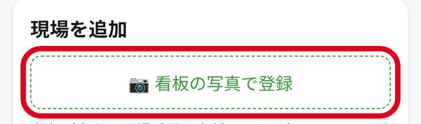
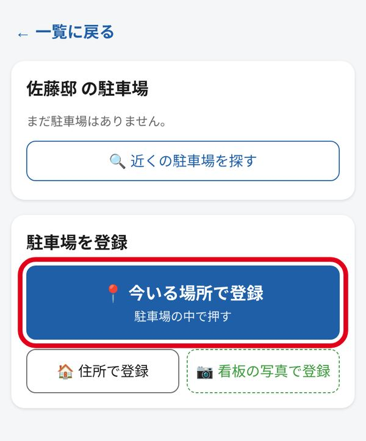
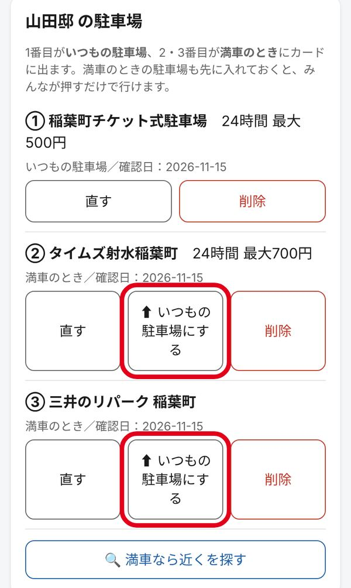
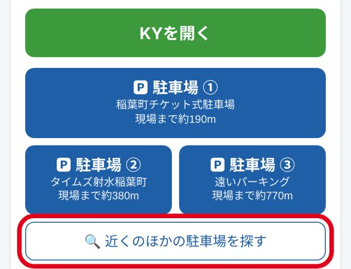

1 現場を写真で入れる
1「＋ 現場を追加」→「📷 看板の写真で登録」
番号が自動で入ります。

2看板と番号を見比べて「追加する」
読み違いがあります。現場番号・入場と退場の電話番号を看板と1つずつ見比べてください。

みんなが「押すだけ」で使えるように、現場や駐車場を入れて仲間に送る人の手順です。まず、アプリの一番下の「🔧 登録する人の表示」をオンにしてください。
番号が自動で入ります。

読み違いがあります。現場番号・入場と退場の電話番号を看板と1つずつ見比べてください。
一番下にあります。「直す」「📋 貼る文をコピー」「🅿 駐車場を登録」が出るようになります。

仲間はリンクを押して「はい」だけで入ります。

料金などは看板の写真か手で入れて保存。出てきた「📋 知らせる文をコピー」をLINEの邸名のトークに貼ります。

みんなが満車で困らないように、2つ目・3つ目の駐車場も先に入れておいてください。カードに「満車なら②・③」のボタンが出て、押すだけで行けます。
1番目がいつもの駐車場（カードの青い「🅿 ナビ」）、2・3番目が満車のとき（オレンジ）です。「⬆ いつもの駐車場にする」で1番目にできます。

「🔍 満車なら近くを探す」はGoogleマップで近くの駐車場を探すボタンです。登録する人の表示のときだけ出ます。よさそうな所があったら、行って📍で登録してください。
